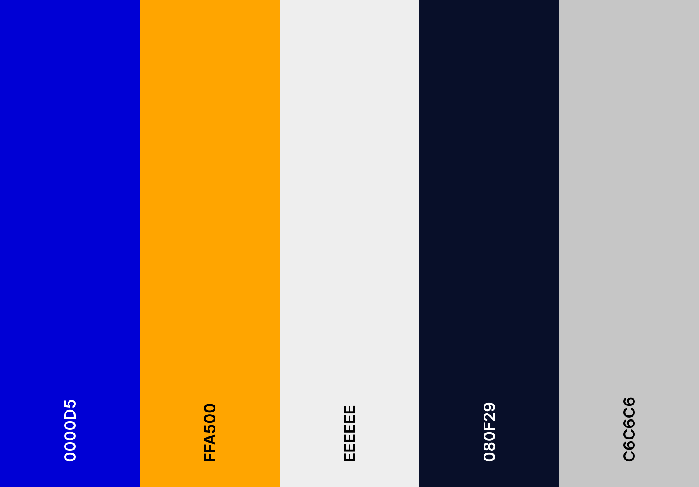
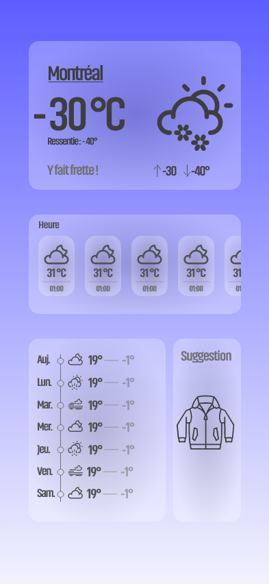
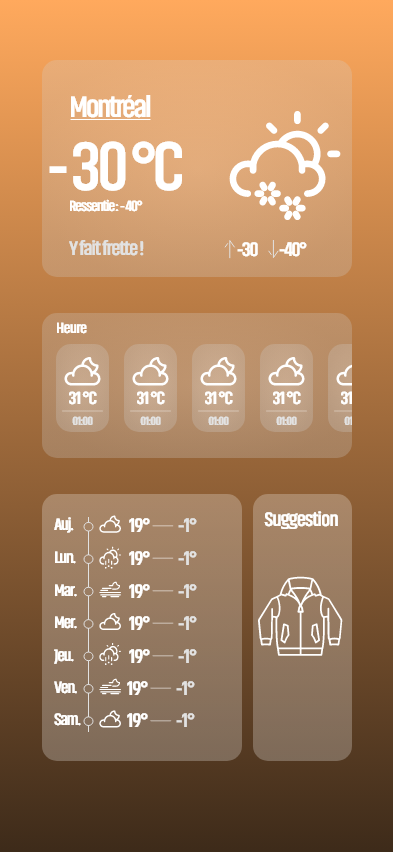
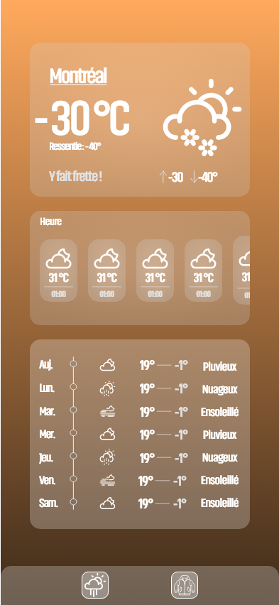

Prêt à Sortir

Objectif du projet
Objectif du projet de recherche
Mon objectif principal était d’apprendre Flutter et de comprendre le plus possible comment il fonctionne pour faire des applications mobiles.
J’ai choisi Flutter, car il permet de développer des applications mobiles multiplateformes avec un seul codebase, qui est utilisable pour le web, sur android et sur apple. Ce qui est un atout majeur.
Comme j'ai déjà appris React, dans les sessions passées, j'ai décidé de choisir Flutter comme il y a des ressemblances avec lui, notament comment est structuré les composants et le fonctionnement du framework.
À travers ce projet, je souhaitais explorer les widgets Flutter, la gestion de l’état et l’intégration d’API pour mieux maîtriser cette technologie.

Présentation rapide de Flutter
Flutter est un framework open-source qui a été développer par Google pour créer des applications mobiles, web et desktop avec un seul code base. Il utilise le langage Dart et offre une performance proche du natif (Swift pour Apple et kotlin pour android)grâce à son moteur graphique Skia (librairie graphique open source).
Équivalent de Flutter
| Critère | Flutter | React Native |
|---|---|---|
| Langage | Dart (Google) | JavaScript (Facebook) |
| Interface (UI) | Widgets 100% personnalisables | Utilise les composants natifs |
| Facilité d'apprentissage | Un peu plus dur (Dart) | Facile si tu connais le web (JS) |
| Écosystème & plugins | Moins de plugins, mais en croissance | Beaucoup de bibliothèques et support |
| Hot Reload (débogage) | Très rapide | Rapide, mais moins que Flutter |
Le choix
- Flutter : si tu veux une app ultra-performante et un design 100% sur mesure.
- React Native : si tu viens du développement web et veux utiliser JavaScript.
En résumé : Flutter = rapidité et flexibilité, React Native = simplicité et intégration facile.
Description
Projet d'application mobile météo
But du projet :
- Créer une application mobile intuitive et accessible qui permet de consulter facilement la météo.
Fonctionnalités principales :
- Affichager des prévisions météorologiques en temps réel.
- Consulter la météo actuelle et future.
- Recommender des vêtements adaptées à la météo du jour.
Technologies utilisées :
- Développement avec Flutter pour assurer une expérience fluide et réactive sur Android (je ne peux pas faire IOS).
- Intégration de l’API OpenWeatherMap pour des données météorologiques précises et actualisées.
Expérience utilisateur :
- Une interface moderne et ergonomique.
- Une consultation simple et agréable des prévisions et recommandations.
Prototype
Apprentissage
Avec la Documentation de Flutter, j'ai appris les bases sur comment le language fonctionne.
Par la suite, j'ai regarder des vidéos sur comment on intègre l'API OpenWeatherMap dans du code et en même temps comment on ajoute les animations de Lotties. (Vidéo de Mitch Koko )
Identité visuelle
Palette de Couleur
Medium Blue, Orange (Web), Anti-Flash White, Oxford Blue, Silver
Font
Premier Prototype
Deuxième Prototype
Troisième Prototype

Problème rencontrer
Défis rencontrés durant le projet

Installation d'Android Studio
- Je travail habituellement sur Linux et j’ai rencontré des difficultés pour installer et configurer Android Studio.
- À cause que java et android studio ne voulais pas bien s'installer, j’ai dû utiliser Windows et j'ai perdu beaucoup de temps à cause de cela.
Problème avec les tests sur iPhone
- Après quelques semaines, j’ai découvert que je ne pouvais pas utiliser mon iPhone pour tester l’application.
- Comme Apple imposse des restrictions strictes sur leurs appareils. Ce qui rendait l'émulation imposibble comme je devais utilisé un Iphone et un Mac.
Limitations de l'API OpenWeatherMap
- Avec la clé API gratuite, les prévisions sont fournies que toutes les trois heures seulement, qui limite les prévisions par heure.
- Impossible d’obtenir des prévisions jour par jour sans passer à une version payante.
- Pour améliorer l’application, acheter une clé API plus avancée sera nécessaire.
Démo

Description :
Voici une Démo rapide de l'application. On peut voir les prévisions de la météo dans la première page et les recommendations vestimentaires selon les prévisions dans la deuxième page.
Extrait de code
if (_meteo == null) return Colors.orange;
final now = DateTime.now();
final sunrise = _meteo!.sunrise;
final sunset = _meteo!.sunset;
if (now.isAfter(sunrise) && now.isBefore
(sunset)) {
return Colors.orange[800]!;
} else {
return Colors.blue[900]!;
}
}
🔎 Explication :
- Si l'heure actuelle est entre le lever et le coucher du soleil, l'écran prend une teinte chaude (orange).
- Sinon, il passe à une teinte froide (bleu nuit).
- Cette transition donne un effet visuel fluide qui améliore l'expérience utilisateur.
_getWeatherAnimation(meteo?.condition),
width: 120,
height: 120,
);
if (condition == null) return 'assets/meteo/default.json';
switch (condition.toLowerCase()) {
case 'clear':
return 'assets/meteo/lune.json';
case 'clouds':
return 'assets/meteo/nuage.json';
case 'rain':
return 'assets/meteo/pluie.json';
case 'snow':
return 'assets/meteo/neige.json';
default:
return 'assets/meteo/default.json';
}
}
🔎 Explication :
- _getWeatherAnimation(meteo?.condition) sélectionne une animation adaptée à la météo actuelle.
- Exemple :
- 🌞 clear → Soleil
- ☁️ clouds → Nuages
- 🌧 rain → Pluie
💡 Impact UX : Cela rend l’application plus attrayante et interactive.
try {
LocationPermission permission = await Geolocator.checkPermission();
if (permission == LocationPermission.denied) {
permission = await Geolocator.requestPermission();
}
if (permission == LocationPermission.deniedForever) {
return "";
}
Position position = await Geolocator.getCurrentPosition(
locationSettings: LocationSettings(accuracy: LocationAccuracy.high),
);
List<Placemark> repere = await placemarkFromCoordinates(position.latitude, position.longitude);
return repere[0].locality ?? "";
} catch (e) {
return "";
}
}
🔎 Explication :
- 📍 Vérification des permissions de localisation
- 📡 Récupération des coordonnées GPS de l’utilisateur
- 🏙 Conversion des coordonnées en nom de ville avec placemarkFromCoordinates()
💡 Utilisation : L’application affiche automatiquement la météo de la ville où se trouve l’utilisateur.
try {
final rep = await http.get(
Uri.parse('$baseUrl/weather?q=$nomVille&appid=$apiKey&units=metric'),
).timeout(const Duration(seconds: 10));
if (rep.statusCode == 200) {
return Meteo.fromJson(jsonDecode(rep.body));
} else {
throw Exception('Erreur ${rep.statusCode}');
}
} on SocketException {
throw Exception('Pas de connexion internet');
} on TimeoutException {
throw Exception('Temps de réponse dépassé');
}
}
🔎 Explication :
- 🔗 Appel API → L’URL contient le nom de la ville et la clé API.
- ⏳ Timeout → Si la requête prend trop de temps, une erreur est affichée.
- 🔄 Conversion JSON → Les données brutes sont transformées en objet Meteo.
- ⚠ Gestion des erreurs → Si l'API ne répond pas ou si l’utilisateur n’a pas Internet, un message est affiché.
💡 Utilisation : Cette méthode est appelée dans main.dart lors de l’initialisation pour obtenir la météo actuelle.
.png)
.png)
🔎 Explication :
Voici comment on fait l'équivalent du html/css. Il n'y a pas de balise ou autre. C'est juste du code et du style ensemble.
Réflexion
Réflexion sur le projet de recherche
- Autonomie totale : Possibilité de gérer le projet à son rythme me donne plus de confiance pour le future.
- Apprentissage approfondi : Exploration complète de Flutter sans dépendre d’un groupe. Me montre que je suis capable d'apprendre de moi même et se voyait quand même dans les cours passés
- Flexibilité : Capacité d’adapter les objectifs en fonction des découvertes et des défis rencontrés.
- Manque de soutien : Pas d’équipe pour aider à résoudre les problèmes techniques ou conceptuels ou même juste donner de la motivation.
- Gestion du temps : Sans avoir une bonne organisation. Je risque de prendre plus de temps dans mon travail que prévue.
- Complexité des obstacles : Certains défis techniques, comme l’installation d’Android Studio ou les limitations d’Apple. M'a vraiment montré que je suis débrouillard quand je le veux.
Est-ce que j'ai atteint mon Objectif ?
Oui, selon moi j'ai atteint mon objectif de ce projet de recherche.
- Maîtrise de Flutter : J'ai une correct compréhension du framework, avec comment les widgets fonctionne et la gestion d'état.
- Application fonctionnelle : Le prototype final inclue toutes les Fonctionnalités clés prévues (prévision météorologique et recommendations vestimentaires)
- Adaptabilité : Malgré les problèmes que j'ai eu, j'ai réussis à trouver des alternatives pour contourner les problèmes.
Future ?
- Université : Continuer à apprendre et à explorer de nouvelles technologies pour élargir mes compétences et rester à jour.
- Carrière : Utiliser Flutter dans des projets professionnels pour créer des applications mobiles performantes et modernes.